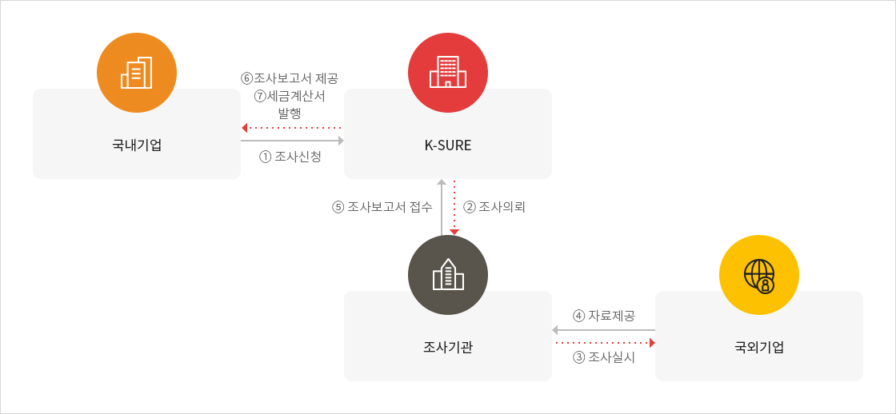

국외기업 신용조사 서비스
제도개요
- K-SURE의 해외지사 및 전 세계 신용조사기관과 연계하여 해외소재 기업의 기본정보, 재무정보 등의 신용조사를 실시한 후 의뢰인에게 신용조사 보고서를 제공하는 서비스
- 국외기업에 대한 심층조사가 필요하거나 신용조사에 기타 어려움이 발생하는 경우 부득이하게 실제 조사 소요기간이 변동 될 수 있음

크게보기
{kind=link}
신용조사 보고서 종류
| 요약보고서 | 정보자료 제공내역 | 목적 | 보고서 샘플 |
|---|---|---|---|
| 요약보고서 | 일반현황, 신용등급평가정보 수출보험이용정보 등 | 수출보험부보를 위한 등급책정 | 샘플보기 |
| Full Report | 신용조사보고서원본 + 요약보고서 | 추가적인 국외기업정보 확보 | 샘플보기 |
※ 현지 사정에 따라 재무자료를 입수하지 못하는 경우가 있으므로 보고서 내에 재무자료가 포함되지 않을 수 있습니다.
※ 일부 지역은 현지 신용조사기관의 사정에 따라 Full Report가 제공되지 않을 수 있습니다.
※ 일부 지역은 현지 신용조사기관의 사정에 따라 Full Report가 제공되지 않을 수 있습니다.
신용조사 보고서 신청 종류
| 신청방법 | 내용 | 상세설명 | 소요기간 |
|---|---|---|---|
| 기존자료구매 | 기평가된 보고서 구매 | 6개월이내 기평가된 보고서 다운로드 | 당일 |
| 신규신청 | 공사 앞 조사신청 |
|
통상 3주 |
※ 신규신청의 경우 현지 사정에 따라 조사거절, 불가, 지연이 발생할 수 있으므로 시간을 두고 여유있게 신청해주시기 바랍니다.
※ 진행상태가 ‘신청’이외의 경우에는 신청에 대한 취소가 불가능합니다.(공사에 의한 접수 이전에만 신청자가 직접 취소 가능)
※ 진행상태가 ‘신청’이외의 경우에는 신청에 대한 취소가 불가능합니다.(공사에 의한 접수 이전에만 신청자가 직접 취소 가능)
신용조사 보고서 조회 방법
| 조회가능시기 | 조회방법 |
|---|---|
| 우리 공사에 의한 신용조사 완료 시 | 사이버영업점에서 직접 조회 |
※ 청구서 및 세금계산서는 매월초 마스터 사용자 이메일로 발송(‘10년 1월 부터 시행)되며, 사이버 영업점에서도 직접 조회·출력하여 사용이 가능합니다.
※ 신용조사완료일의 익월 27일까지 수수료를 납부하지 않을 시에는 향후 신용조사서비스 이용이 불가능합니다.
※ 수수료 미납 건이 있는 경우에는 납부하신 수수료는 미납 건에 우선적으로 결제됩니다.
※ 신용조사완료일의 익월 27일까지 수수료를 납부하지 않을 시에는 향후 신용조사서비스 이용이 불가능합니다.
※ 수수료 미납 건이 있는 경우에는 납부하신 수수료는 미납 건에 우선적으로 결제됩니다.
신용조사보고서 번역샘플
- K-SURE가 제공중인 신용조사보고서 중 Full Report를 수출업체가 보다 원활하게 활용할 수 있도록 작성된 샘플입니다.
- 아래의 샘플을 다운받아 K-sure가 서비스중인 Full Report를 편리하게 이용하실 수 있습니다.
※ 단, 번역대상회사는 임의의 회사입니다.